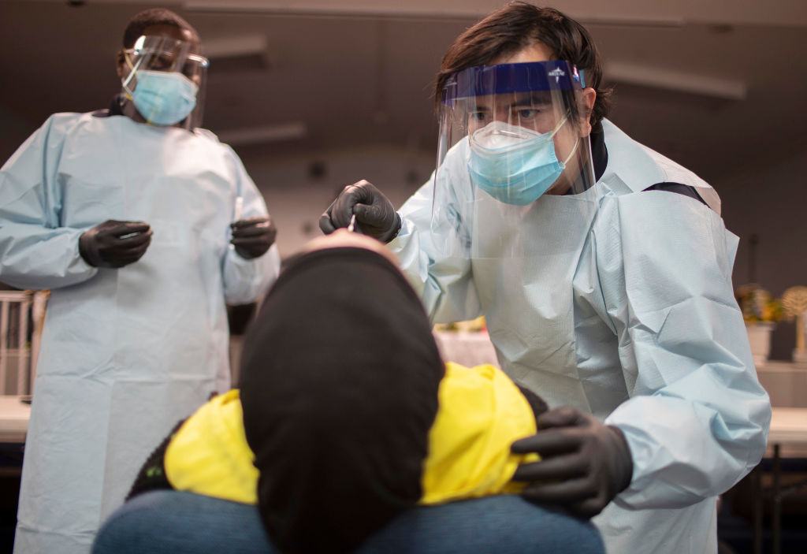
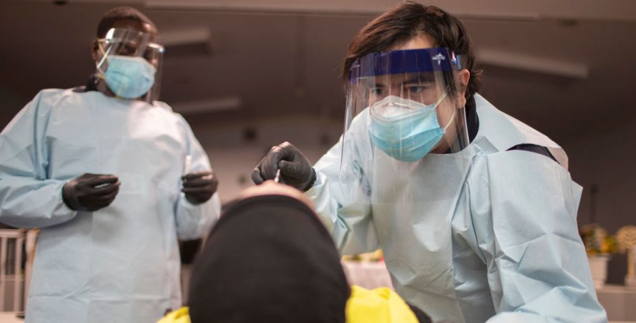

Estudios sugieren que la calvicie masculina podría ser un factor de riesgo para el Covid-19

Tras observaciones preliminares, en el marco de las investigaciones para conocer más sobre el tipo de coronavirus que causa la enfermedad Covid-19, la presencia de calvicie en los hombres contagiados llamó la atención de los expertos.
Frente a esto, el doctor de la Clínica Mayo, Gregory Poland, dio cuenta de dos estudios que sugieren que la clave está en los andrógenos, hormonas sexuales masculinas asociadas con la calvicie.
'Lo interesante es que descubrieron que esto también era cierto en mujeres mayores que experimentaban una calvicie similar a la de patrón masculino debido a las elevadas hormonas androgénicas, por lo que existe alguna relación', explicó.
Así, este rasgo podría sumarse a otros que tendrían que ya son un factor a considerar, como el tipo de sangre.'Hemos oído que el grupo sanguíneo A es de mayor riesgo que el grupo sanguíneo O.Son muchos pequeños factores individuales, como los genes, el medio ambiente, el estado básico de salud, e incluso la edad, que en conjunto determinan el riesgo de que alguien pudiera padecer una enfermedad grave si se infectara', precisó Poland.
Posted On: 2020-08-26T21:59:00


Content Date: 2020-08-26
Download Date: 2021-04-08
Document ID: L0C049JPE